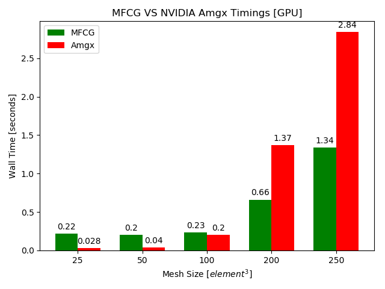
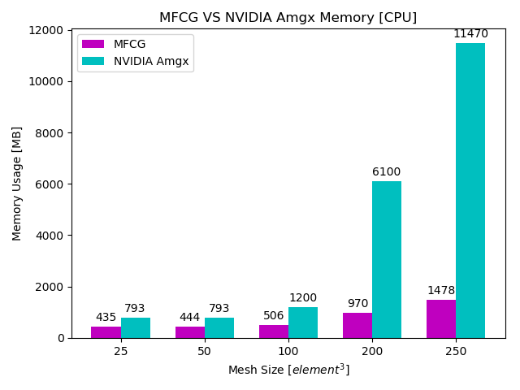
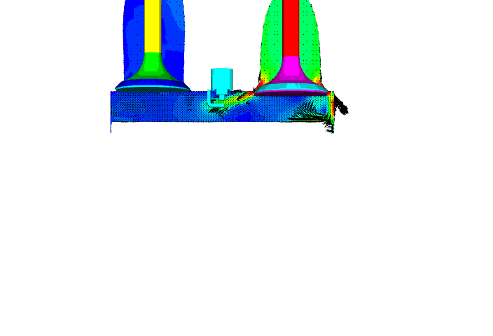
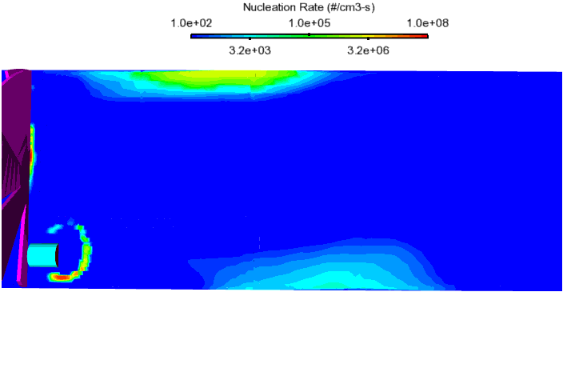

|
Petros Apostolou (Πέτρος Αποστόλου)
PhD in Computer Science at University of Minnesota
|

|
|
|
|
|
I recently graduated from MSc program in M.Eng at the University of Pittsburgh with a focus in High Performance Computing and
actively seeking for software engineering opportunities in the area of Big Data applications. My research interests are focused on
software development for distributed memory parallelism (DMP) on clusters GPU clouds. Modern applications like Deep Learning & AI demand
higher computational power due to the vast amounts of data and analytics, enabled by common and ubiquitous parallelism. Therefore, the
development of computationally efficient algorithms for computing and analyzing Big Data becomes vital in many research and scientific
areas like Computational Bioinformatics for Petascale Genomics Analysis, Accurate Forecast Predictions, High-Fidelity Multi-Physics
Simulations like Additive Manufacturing and CFD, Autonomous Navigation Systems and others. To this end, i am very excited to address
and provide solutions to basic questions like how applications can benefit from the new software development trends? How AI and HPC
parallelism empower processing large volumes of data leading to new discoveries and types of applications?
Some of my current research projects and interests are listed below:
|
Development of HPC GPU-enabled algorithms for Large-Scale Numerical Analysis:
|
|
One of the greatest challenges in large-scale numerical analysis is the availability of computer memory for
solving the linear system of equations. Like in large-scale finite element simulations, where
the size of the system matrix assembly becomes very large, the FEA solver requires huge
amounts of computational time and memory that very often exceed the actual memory limits
of the available hardware resources. To overcome this problem, a GPU-enabled matrix-free
conjugate gradient (MFCG) method is imlemented to finite element computations which
avoids the global matrix assembly. The main difference of the MFCG to the classical conjugate gradient (CG)
solver lies on the implementation of the matrix-vector product operation.
Matrix-vector operation found to be the most expensive process consuming more than 80%
out of the total computations for the numerical solution and thus a matrix-free matrix-vector
(MFMV) approach becomes beneficial for saving memory and computational time throughout the execution of the FEA.
A performance analysis on a TITAN V GPU between the parallel MFCG and NVIDIA Amgx matrix-assembly solver
shows that the MFCG solver is 2.12 × times faster consuming 7.76 × times less memory.
The parallel MFCG GPU solver achieves a maximum of 81.81 × speed-up allowing for the acceleration of the numerical solution
for mesh sizes up to 166.375M elements within a single 12GB RAM GPU using double-precision arithmetic.
|

GPU MFCG VS NVIDIA Amgx
|
Development of RNA Sequencing Analysis for Genomics using NVIDIA GPU accelerated algorithms:
Researchers are sequencing both the novel coronavirus and the genomes of people afflicted with COVID-19 to understand,
among other things, the spread of the disease and who is most affected. But analyzing genomic sequences takes time and
computing muscle.Based on the well-known Genome Analysis Toolkit, Parabricks uses GPUs to accelerate by as much as
50 times the analysis of sequence data (Ref: NVIDIA Website)
|
|
|
Development and Application of Large-Eddy Simulation (LES) Models for Turbulent Flows:
|
Large-Eddy Simulation (LES) is a promising technique to model unsteady phenomenoa found in practical applications of turbulent flows. For example, in Internal Combustion Engines (ICE), LES can predict cycle-to-cycle variations in intake flow and combustion, a key for development of advanced engines. My research goal is to perform uncertainty quantified LES for practical applications.
|
Phase-Flow in Combustion Cylinder
|
Simulations of Gas-Phase Chemistry and Aerosol Dynamics in Turbulent Flows:
|
|
|
Most combustion systems emit fine aerosol particles into the atmosphere. Measurement of number and mass distributions of fine particles is important to understand
their health effects, and to develop emissions regulations.
It is found that measured distribution is dependent on the design and
flow configuration of the measurement device (dilution sampler) itself. We have performed turbulent flow simulations of aerosol dynamics to understand the formation and evolution of particles inside the dilution samplers.
|
Dilution Sampler
|
|